Unit tests for Windows UI Library (WinUI) apps in Visual Studio
This article describes how to create unit tests for WinUI apps in Visual Studio using the built-in unit test project templates.
For a general overview of testing Windows App SDK apps, see Test apps built with the Windows App SDK and WinUI 3.
Note
The unit test app described here is written in the context of a WinUI application. This is required for any tests that execute code requiring the Xaml runtime. This project will create a Xaml UI Thread and execute the tests.
In this tutorial, you learn how to:
- Create a Unit Test App (WinUI 3 in Desktop) for C# or Unit Test App (WinUI 3) for C++ project in Visual Studio.
- Use the Visual Studio Text Explorer.
- Add a Class Library (WinUI 3 in Desktop) project for testing.
- Run tests with the Visual Studio Test Explorer.
Prerequisites
You must have Visual Studio installed.
If you haven't already installed Visual Studio, go to the Visual Studio downloads page to install it for free.
How do I create a Test App (WinUI 3 in Desktop) project
To start, create a unit test project. The project type comes with all the template files you need.
Open Visual Studio and select Create a new project in the Start window.
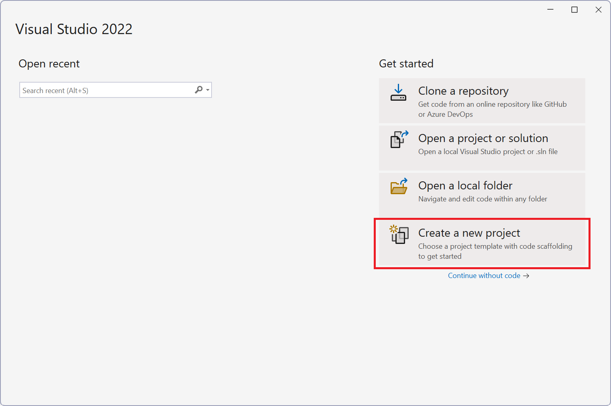
In the Create a new project window, filter projects to C#, Windows, and WinUI, select the Unit Test App in Desktop (WinUI 3) template (or Unit Test App (WinUI 3) for C++), and then select Next

[Optional] On the Configure your new project window, change the Project name, Solution name (uncheck Place solution and project in the same directory) and the Location of your project.
Select Create.
How do I run tests with Test Explorer
When you create the test project, your tests appear in Test Explorer, which is used to run your unit tests. You can also group tests into categories, filter the test list, create, save, and run playlists of tests, debug unit tests and (in Visual Studio Enterprise) analyze code coverage.
The UnitTests.cs file contains the source code for the unit tests used by Test Explorer. By default, the basic sample tests shown here are created automatically:
namespace WinUITest1
{
[TestClass]
public class UnitTest1
{
[TestMethod]
public void TestMethod1()
{
Assert.AreEqual(0, 0);
}
// Use the UITestMethod attribute for tests that need to run on the UI thread.
[UITestMethod]
public void TestMethod2()
{
var grid = new Grid();
Assert.AreEqual(0, grid.MinWidth);
}
}
}
If you haven't done so already, build your solution. This will allow Visual Studio to "discover" all available tests.
Open Test Explorer. If it's not visible, open the Test menu, and then choose Test Explorer (or press Ctrl + E, T).
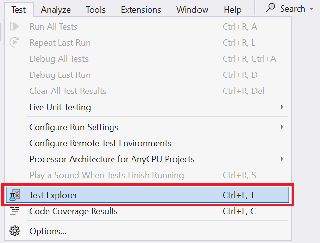
View tests. In the Test Explorer window, expand all nodes (only the sample tests will be present at this point).
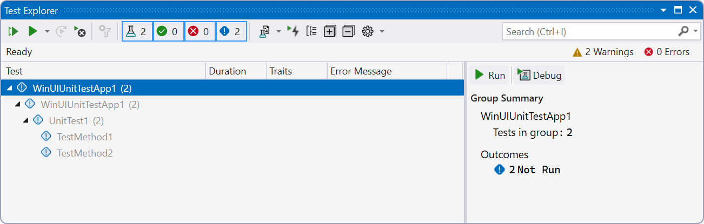
Run tests.
- Right click on individual test nodes and select Run.
- Select a test and either press the Play button or press Ctrl + R, T.
- Press the Run All Tests In View button or press Ctrl + R, V.
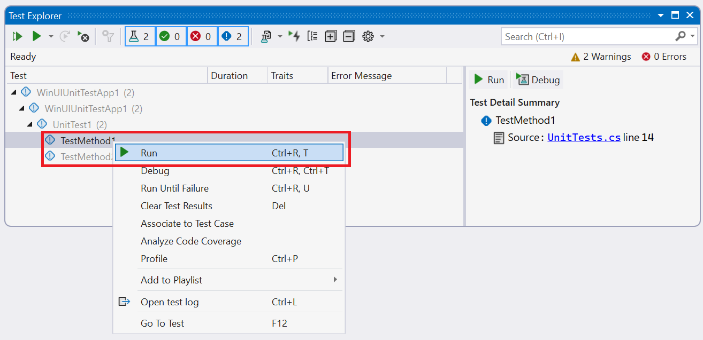
Review results. After tests are complete, results are shown in the Test Explorer window.
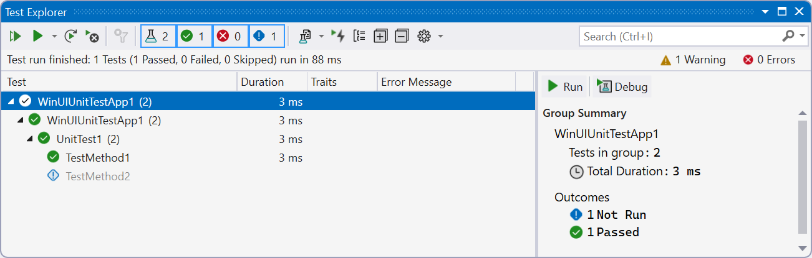
Add a new project to the unit test solution. In the Solution Explorer, right click the solution and select Add -> New Project....
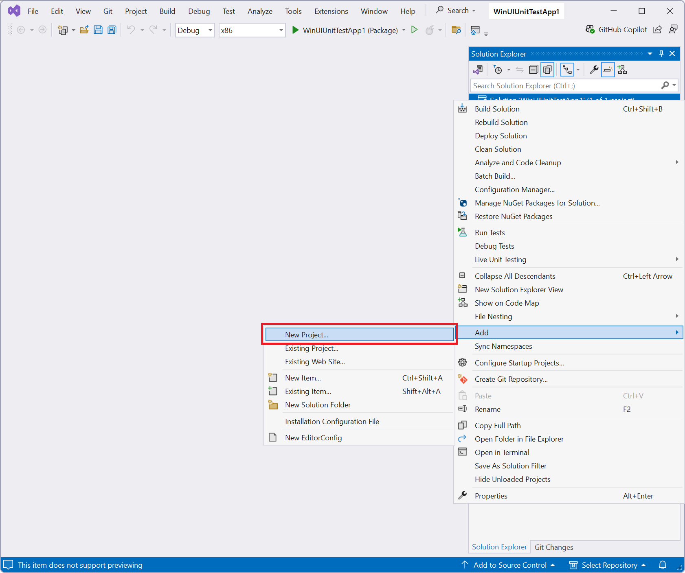
For this example, add a WinUI class library project. From the New Project window, filter on C#/Windows/WinUI and select Class Library (WinUI 3 in Desktop).
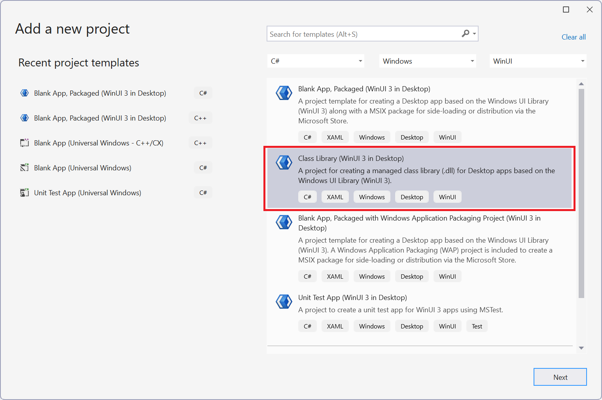
Select Next and enter a name for the project (for this example we use "WinUIClassLibrary1") and press Create.
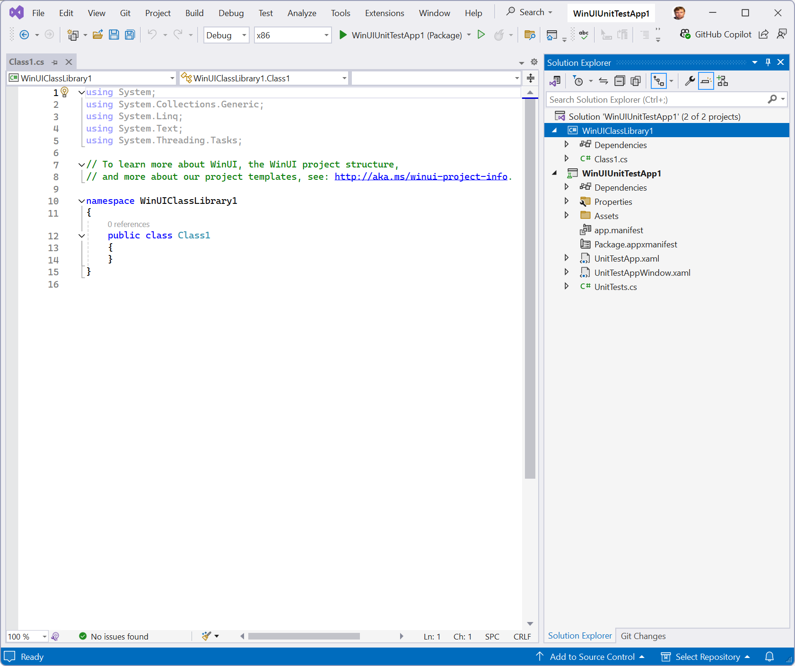
Add a new UserControl to the project. In the Solution Explorer, right click on the WinUI class library project you just added and select Add -> New Item from the context menu.
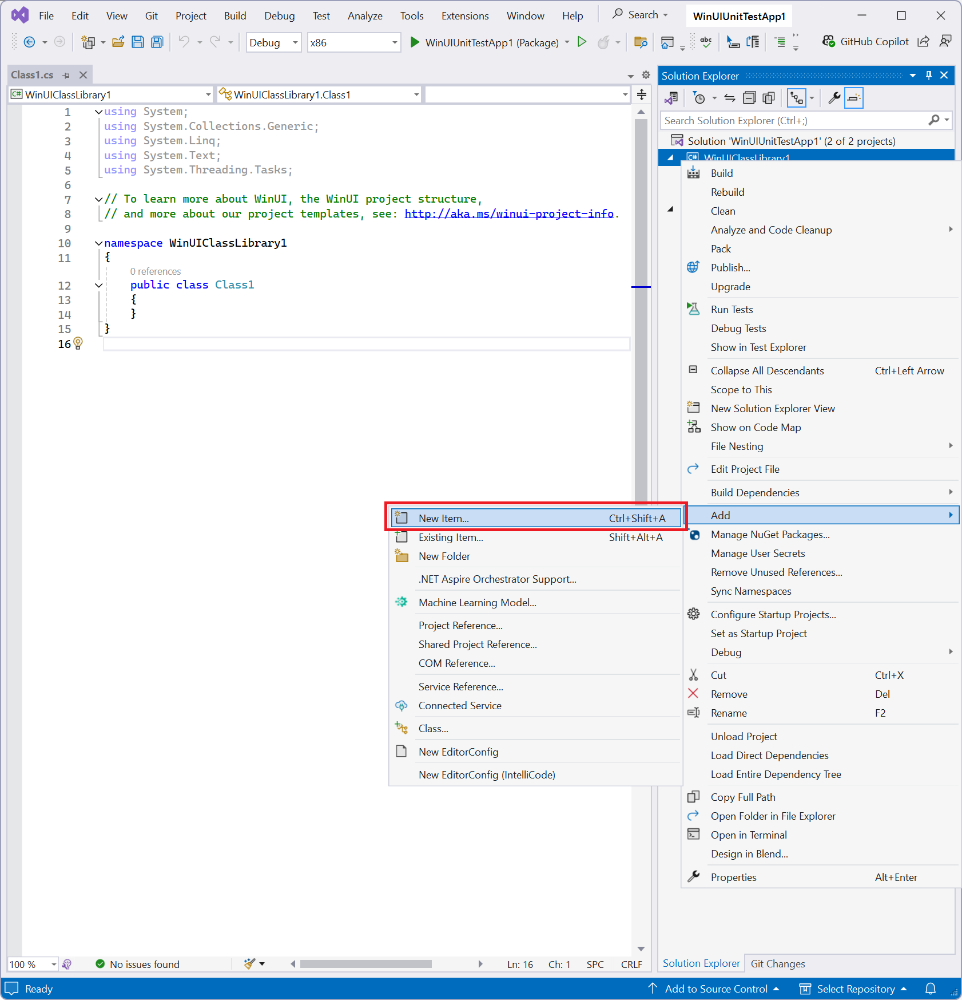
In the Add New Item window, select the WinUI node in the Installed items list and then choose User Control (WinUI 3) from the results. Name the control "UserControl1".
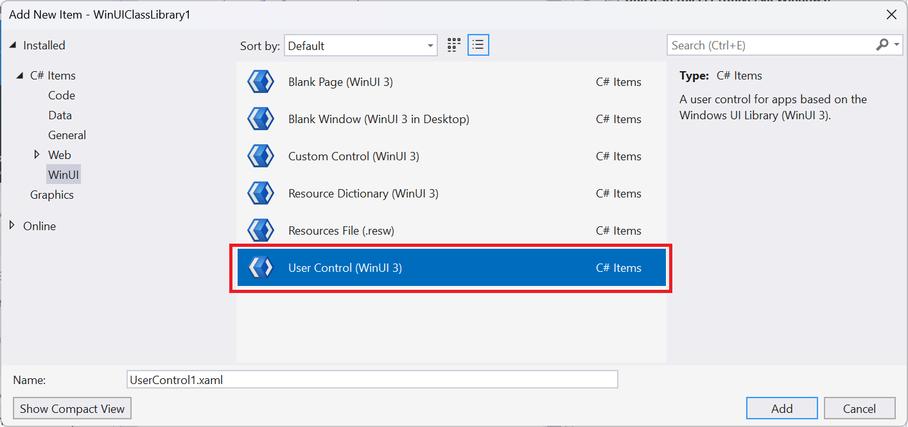
Open the UserControl1.xaml.cs code-behind file. For this example, we add a new public method called "GetSeven()" that simply returns an integer.
namespace WinUICLassLibrary1 { public sealed partial class UserControll : UserControl { public UserControl1() { this.InitializeComponent(); } public int GetSeven() { return 7; } } }Set the WinUI Class Library project as a dependency of the unit test project to enable the use of types from the WinUI class library project. In Solution Explorer, under the class library project, right click on Dependencies and select Add Project Reference.
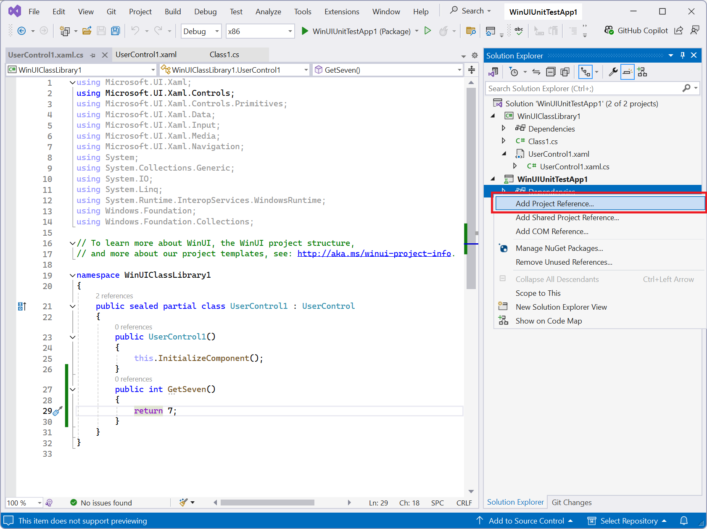
Select the "WinUIClassLibrary1" item from the Projects list.
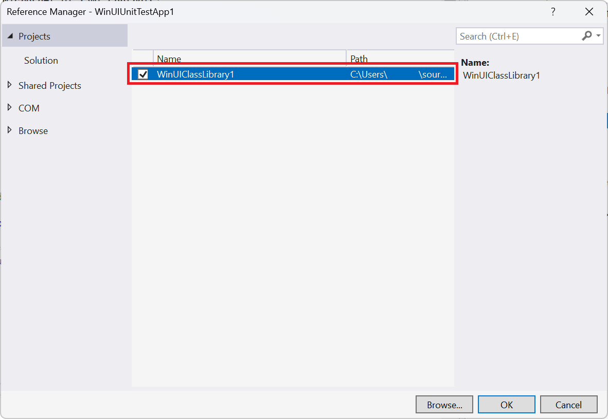
Create a new test method in UnitTests.cs. As this test case requires a XAML UI Thread to run, mark it with the [UITestMethod] attribute instead of the standard [TestMethod] attribute.
[UITestMethod] public void TestUserControl1() { WinUIClassLibrary1.UserControl1 userControl1 = new WinUIClassLibrary1.UserControl1(); Assert.AreEqual(7, userControl1.GetSeven()); }This new test method now appears in Test Explorer as one of your unit tests.
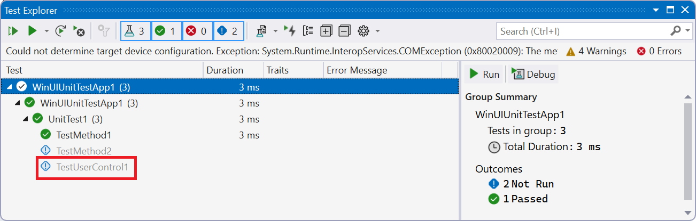
Run tests.
- Right click the new test node and select Run.
- Select the new test and either press the Play button or press Ctrl + R, T.
- Press the Run All Tests In View button or press Ctrl + R, V.
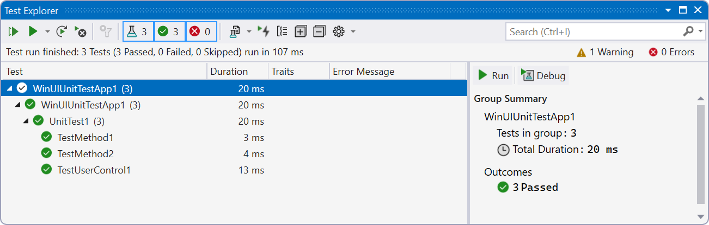
Additional resources
Next steps
In this tutorial, you learned how to:
- Create a Test App (WinUI 3 in Desktop) project in Visual Studio.
- Use the Visual Studio Text Explorer.
- Add a Class Library (WinUI 3 in Desktop) project for testing.
- Run tests with the Visual Studio Test Explorer.
More comprehensive coverage of the testing tools included with Visual Studio: